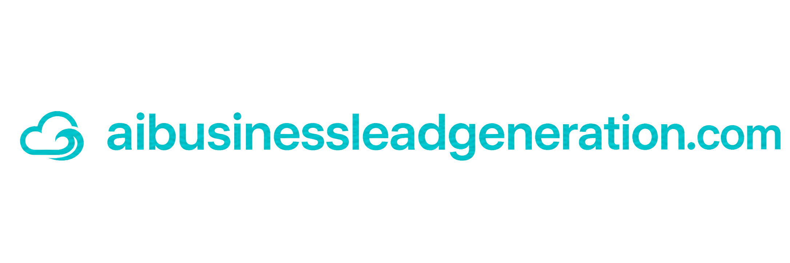

Attract the right prospect
Build the message, offer, landing experience, and campaign around a defined customer and business problem.

AI-supported lead generation system
Cielo Surfing connects the offer, landing page, campaigns, CRM, AI follow-up, appointments, and reactivation—so more of the right prospects become real conversations.
One growth system
Instead of disconnected campaigns, every useful signal supports the next action and gives the owner a clearer view of what is producing conversations.
Build the message, offer, landing experience, and campaign around a defined customer and business problem.
Record the source, interest, preferred language, consent, and behavior needed for relevant follow-up.
Use CRM workflows, AI-supported responses, email, SMS, and booking to continue the conversation.
Designed for better decisions
Cielo Surfing combines marketing strategy and automation without pretending every click is a customer.
Designed by Cielo Surfing
We map your offer, traffic sources, intake, consent, follow-up, pipeline, booking, and reporting before building campaigns.
AI lead generation by Cielo Surfing
Sistema de generación de prospectos con IA
Cielo Surfing conecta la oferta, página, campañas, CRM, seguimiento con IA, citas y reactivación para convertir más prospectos correctos en conversaciones reales.
Un sistema de crecimiento
Cada señal útil apoya la siguiente acción y muestra con mayor claridad qué produce conversaciones.
Construye mensaje, oferta, página y campaña alrededor de un cliente y problema definidos.
Registra fuente, interés, idioma, consentimiento y comportamiento para dar seguimiento relevante.
Usa CRM, respuestas con IA, email, SMS y reservación para lograr el siguiente paso.
Mejores decisiones
Cielo Surfing combina estrategia y automatización sin confundir cada clic con un cliente.
Diseñado por Cielo Surfing
Mapeamos oferta, tráfico, captura, consentimiento, seguimiento, pipeline, citas y medición antes de crear campañas.
Generación de prospectos con IA por Cielo Surfing